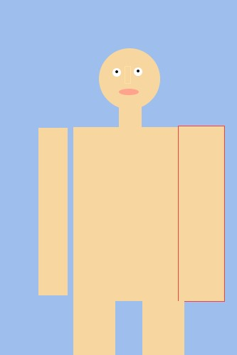

Processing

Self Portrait
This exercise was a basic start into introducting java script by using the program Processing. The Process into creating various shapes into a self portrait was difficult for me (as you can see). First the initial canvas size is set in Processing and then the image size in photoshop. Next by using the rectangle tool to click and drag a general position and shape of the reference image. Given the infomation the x, y, height, and width coordinates are inputed into processing to create the drawn shape that's mapped in the same area.
Conditional Statement
This exercise implemented the use of conditional statements as well as a mouse feature within our Processing code. As a basic starting point, the assignment was to modify the provided example of a bouncing ball sketch. Conditional statements include "if" and "else" statements. A mouse feature can include mouseX ,mouseY, or mousePressed to add interactivity within your sketch. My sketch invovled mouseX and mouseY in order to give the function of the ellipse to follow your cursor live.